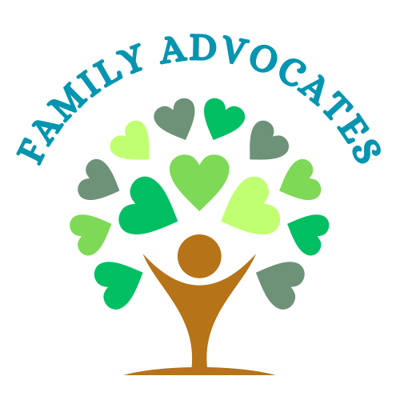

Right now, a child near you is moving through foster care with no steady adult in their corner. You don't need to foster them or adopt them. You just need to show up — and keep showing up. Be their constant.
That's foster care for a lot of kids. The people meant to protect them keep changing. What they're missing isn't another professional. It's one person who simply doesn't leave.
New placements, new rules, new strangers.
New teachers, lost friends, broken routines.
Caseworkers turn over. Their story restarts.
One steady person, for as long as they need you.
You're not a foster parent or a therapist. You're a trained, caring adult who gets to know one child and makes sure the grown-ups making decisions actually see them.
Visit a child regularly — a walk, a milkshake, a conversation. Become a familiar, safe face.
Get to know what they need from the people in their life — teachers, doctors, family.
Carry their voice to the adults and the court deciding their future, so they're never overlooked.
"Being a child's constant" isn't a nice idea — it's a real, established role. CASA volunteers are everyday people, appointed by a judge and backed by professional staff, who advocate for one child's best interest. The program has supported children for over 45 years, with local programs in 49 states.
You'll be fully trained, never alone, and supported by a coordinator every step of the way. The mission is simple; the structure behind you is serious.
We're a volunteer-recruitment partner for local CASA programs. We exist to help them solve their hardest problem — finding the advocates that children are waiting for.

One Constant Voice partners with — the CASA program serving — to connect caring people like you with the training that turns them into a child's constant.
When you raise your hand here, your information goes straight to . Their team — real people, not a call center — follows up to invite you to a free video info session. We simply help more people find their way to them.
Learn more about →No law degree. No social-work background. No prior experience. We train you for everything else.
"The need for volunteers grows faster than the number of people raising their hands."
What advocacy actually looks like — in the words of a volunteer, a social worker, and the outcomes for kids here in Idaho.
"I love serving as a Guardian ad Litem. There is no greater way for me to spend my time than advocating for children whose voices would otherwise not be heard. The volunteer work I do often gives these children a better chance at a successful life."
"I love my CASA volunteers. CASA volunteers will ask a question I have never thought about. I love to collaborate with them. They are fantastic and CASA volunteers make cases easier and smoother!"
A youth who had constantly run away found stability after her advocate fought for the right placement. She's now celebrated a year of sobriety, and wants to finish her program, live with her dad and stepmom, graduate, play sports, and keep working with horses.
For an older youth placed out of state, her advocate shows up every single week — they read a book together and talk it through. She's setting boundaries, advancing in school, and working her program, with someone consistently in her corner.
In a court report, a social worker noted that after more than four years in foster care, this child's CASA volunteer is one of the strongest, longest-standing connections she has.
Stories shared by Family Advocates. Details are kept general to protect each child's privacy.
You can stop anytime. Most people, once they meet the team, don't want to.
A free, no-pressure hour to see how it works.
Short application plus a background check.
A friendly chat about your "why."
~30 hours that prepare you completely.
Meet your coordinator and your first child.
It starts with 60 seconds and the willingness to begin. You're more ready than you think.
Be their constant →